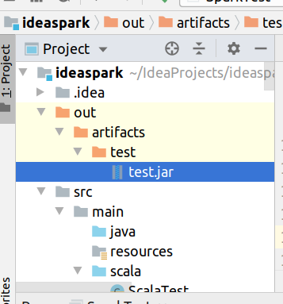

IDEA本地运行Scala,Spark程序
前提:
- maven源设置为阿里云的源(下载依赖的速度很快)
- 安装了IDEA(社区版和专业版都可以)
- 安装了JDK 1.8 (下面的安装都是在Scala 2.11.x版本，对应的JDK版本是1.8)
1. 下载安装Scala
下载二进制zip安装包解压，设置环境变量，类似安装JDK
命令行输入scala测试,
2. IDEA安装Scala 插件
下载慢的，可以在其他下载快的地方下载拷过来，使用磁盘安装的方式安装
3. IDEA创建Maven工程
idea里创建一个maven工程后
在src/main下建立scala文件夹
在scala文件夹右键,点击Mark Directory as Source Root ,将scala 设置为源码目录,设置为源码目录后，文件夹变成蓝色
4. 配置Scala框架支持
现在在scala 文件夹，右键新建文件，发现没有新建scala 的选项，需要添加scala框架支持
打开Project Structure
有两种方法
- 一种是每个工程都点Libraires，添加Scala SDK
在Libraries 选项卡里点击添加，选择Scala SDK ,选择browser浏览本地，选择上面解压的scala路径
另一个是在Global Libraries里添加一个Scala SDK
新建完工程后，在Global Libraries里选择刚刚添加的SDK,右键添加到Module里也行
添加完后,在源码目录右键就可以看到新建Scala类的选项了,新建个Scala类测试
5. 添加Spark 依赖
Spark的依赖包括Spark-Core,Spark-SQL,而且两个的版本要对应
下面的2.3.3为Spark的版本, 2.11为scala 2.11.x版本
1 | <dependencies> |
6. 测试
7. 打包Jar包
在Project Structure 里选择 Artifacts,添加一个Artifacts
左边的为导出的jar需要的东西，右边为可选的东西,这里将右边的compile output(即编译的输出)put into 左边，就可以了
回到主界面,依次选择Build -> Build Artifacts ,jar包就生成在out/目录下
